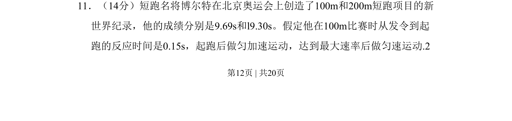
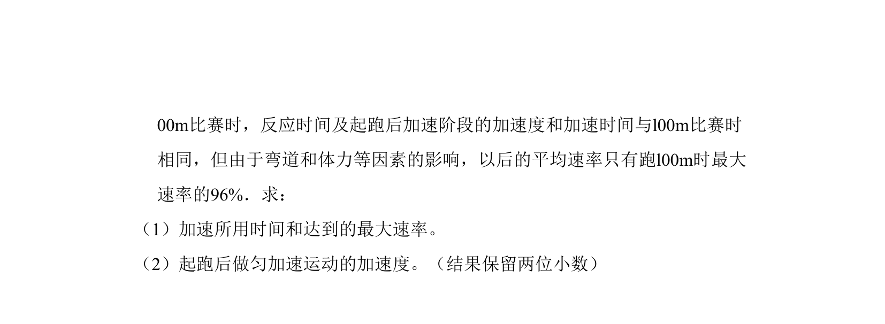
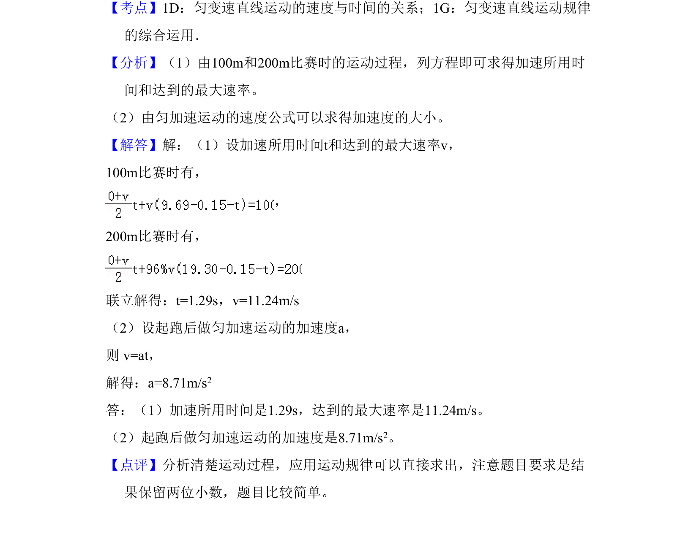

考点：匀加速运动 匀速直线运动 位移 时间


本题通过博尔特短跑数据，考查匀加速与匀速运动组合过程的位移-时间关系及最大速率求解。

📄 原 PDF 第 12 页：
素材/真题/吉林/2008-2024·（吉林）物理高考真题/2010年高考物理试卷（新课标Ⅰ）（解析卷）.pdf
11．（14分）短跑名将博尔特在北京奥运会上创造了100m和200m短跑项目的新 世界纪录，他的成绩分别是9.69s和l9.30s。假定他在100m比赛时从发令到起 跑的反应时间是0.15s，起跑后做匀加速运动，达到最大速率后做匀速运动.2